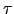

Next: Doc strings Up: Coding conventions Previous: Coding conventions Contents Index
Indentation should be set to four spaces rather than a tab character. This is the recommendation given in the Python style guide found at http://www.python.org/doc/essays/styleguide.htmlhttp://www.python.org/doc/essays/styleguide.html. Emacs should automatically set the tabstop correctly. For vi add the following lines to the vimrc file:
set tabstop=4
set shiftwidth=4
set expandtab
For UNIX systems, including Linux and Mac OS X, the vimrc file is `
/.vimrc' whereas in MS Windows the file is `$VIM/_vimrc' which is usually `C:
 Program Files
Program Files
 vim
vim
 _vimrc'. Certain versions of vim, those within the 6.2 series, contain a bug where the tabstop value cannot be changed using the vimrc file (although typing `:set tabstop=4' in vim will fix it). One solution is to edit the file `python.vim' which on GNU/Linux systems is located in the path `/usr/share/vim/ftplugin/'. It contains the two lines
_vimrc'. Certain versions of vim, those within the 6.2 series, contain a bug where the tabstop value cannot be changed using the vimrc file (although typing `:set tabstop=4' in vim will fix it). One solution is to edit the file `python.vim' which on GNU/Linux systems is located in the path `/usr/share/vim/ftplugin/'. It contains the two lines
" Python always uses a `tabstop' of 8.
setlocal ts=8
If these lines are deleted the bug will be removed. Another way to fix the problem is to install newer versions of the run-time files (which will do the same thing).
Edward d'Auvergne 2007-10-21